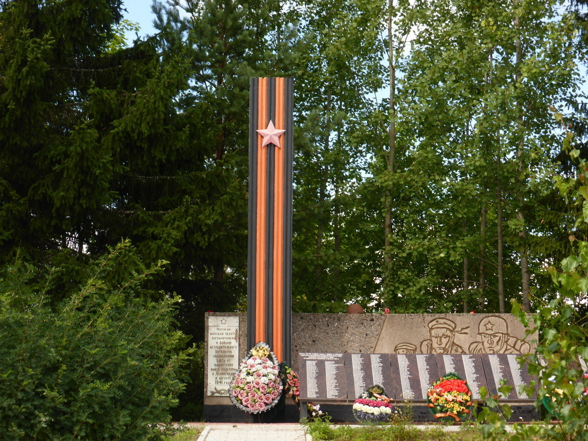
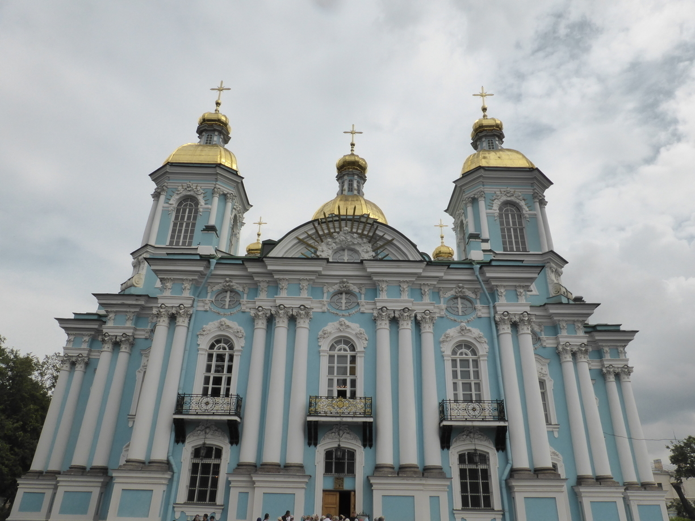

Back in the USSR
Tag 68
Vyborg - Ozerki 80 km
 Unterwegs traff ich zufällig wieder auf Raman. Wir haben kurz auf die Karte geschaut und endschieden ein Stückchen zusammen zu fahren. Wir kamen an einer Quelle vorbei, wo wir unsere Wasservorräte auffüllten und uns ein wenig erfrischten. Im selben Ort gab es zudem einen sowejetischen Helikopter und eine schicke Holzkirche zu bewundern. Kurz darauf trennten sich unsere Wege wieder, da wir unterschiedliche Ziele hatten.
Am Nachmittag habe ich dann noch eine Stunde am Strand in der Sonne gelegen.
Gegen Abend fand ich dann einen netten Zeltplatz direkt an der Ostsee cirka 10 Kilometer nach Ozerki.
Tag 69
Ozerki - Sankt Petersburg 96 km
 An dem Schild kam ich bereits nach 10 Kilometern vorbei. Sankt Petersburg ist schon eine verdammt große Stadt.
An dem Schild kam ich bereits nach 10 Kilometern vorbei. Sankt Petersburg ist schon eine verdammt große Stadt.
Ich hatte zuvor bei Warmshowers jemanden gefunden der mich bei sich aufnehmen wollte. Nach einigem Umherirren durch das regnerische Sankt Petersburg fand ich schließlich zur Wohnung von Vasiliy und Julia. Vasiliy war noch auf der Arbeit und seine Frau sprach nur ein wenig Englisch aber wir haben uns trotzdem verständigen können. Vasiliy und Julia waren hatten bereits eine Tour bis nach Amsterdam gemacht und wollen im nächsten Jahr von Sibirien bis nach Südostasien radeln.
Tag 70
Ruhetag
Am nächsten Morgen bin ich mit der Metro in die Stadt gefahren und anschließend ein wenig umhergewandert. Entlang der Kanäle und der Newa war es besonders schön. 
Bevor es zurück zur Wohnung von Vasiliy und Julia ging hab ich noch ein wenig die Metro erkundet. Die Stationen sind oft sehr aufwending gestaltet und folgen einem bestimmten Thema. 
Am Abend kam Sascha, ein Freund von Vasiliy und Julia, zu Besuch. Gemeinsam haben wir eine Radtour in die Stadt unternommen. Am Ende mussten wir uns etwas beeilen, da in der Nacht die Newabrücken für den Schiffverkehr geöffnet werden. Dies hätte uns den Heimweg versperrt. 
Tag 71
Ruhetag
Am Morgen haben wir erstmal ausgeschlafen. Gegen Mittag ging es dann los in die Stadt, wo wir zu einem Rockfest wollten. Leider war dieses nicht so gut wie erhofft, so dass wir noch einen kleinen Bummel durch die Stadt unternahmen und anschließend zurück fuhren.
Am Abend habe ich mit Vasiliy noch meine Route für den nächsten Tag besprochen, während wir uns von Julia und Sascha haben lecker bekochen lassen.